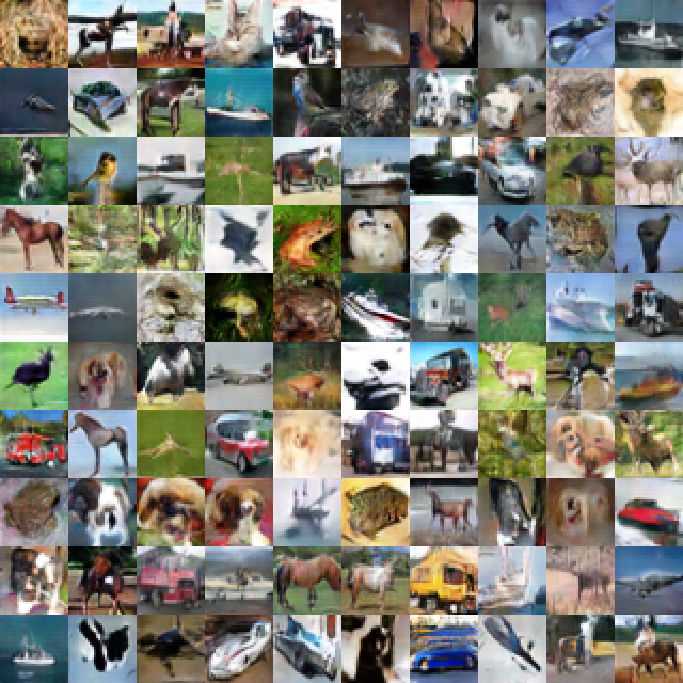
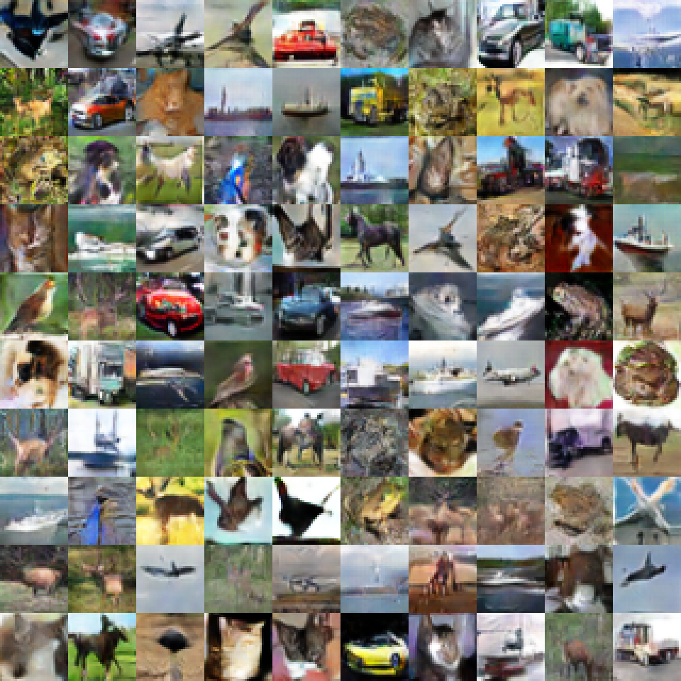
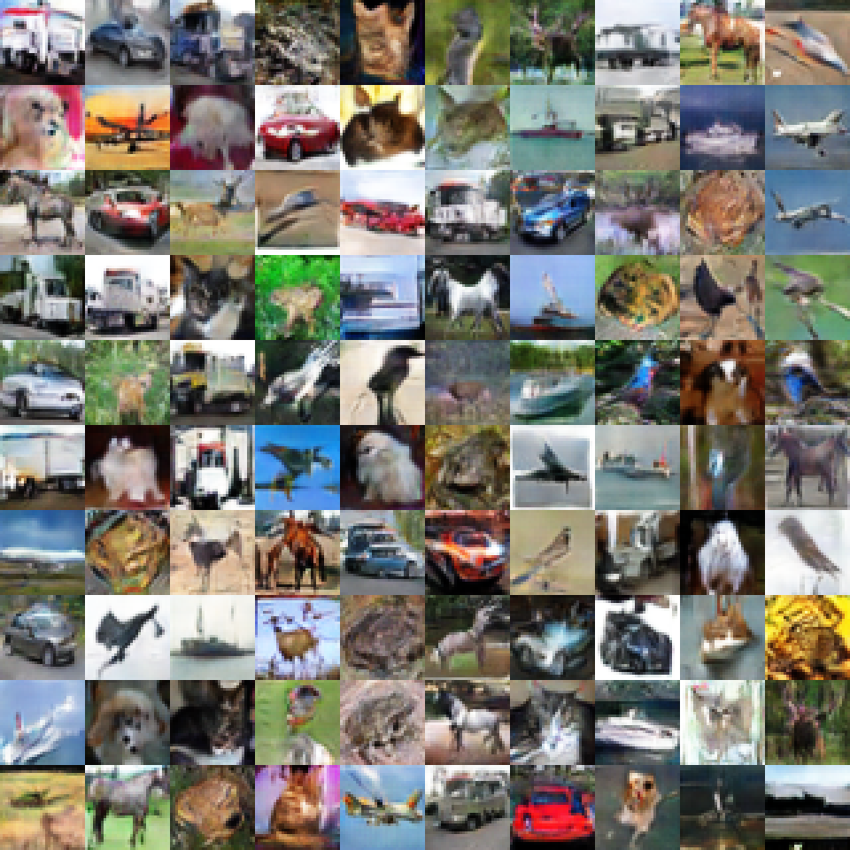
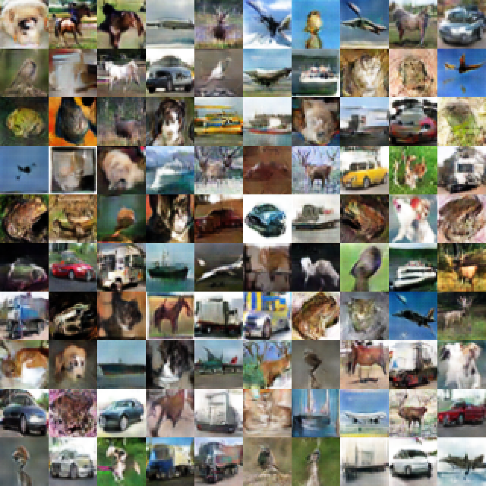
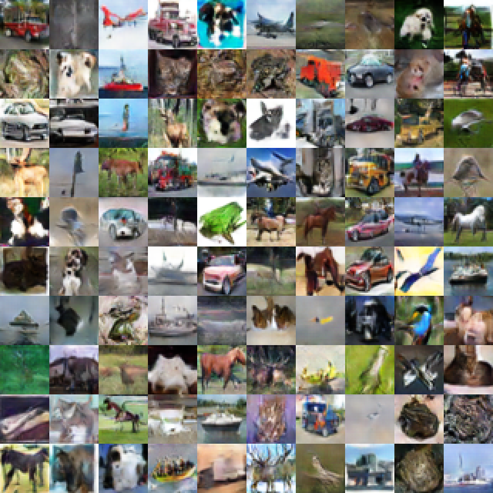
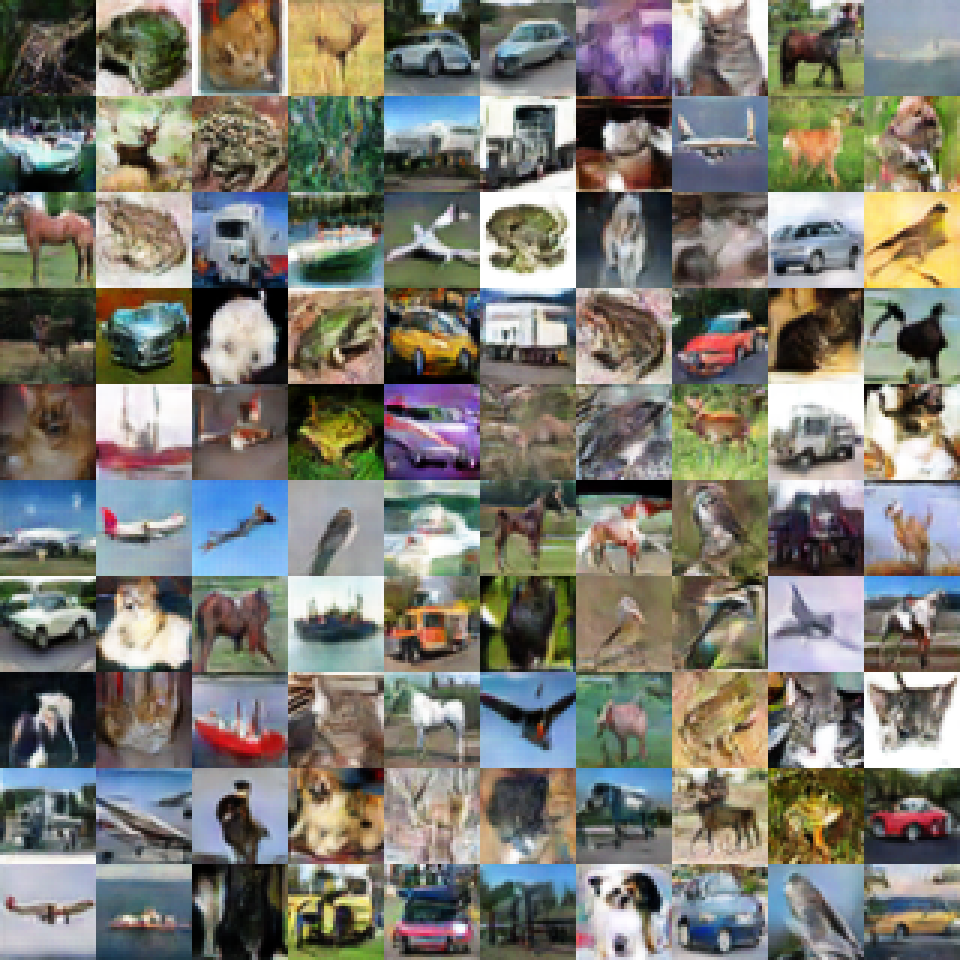
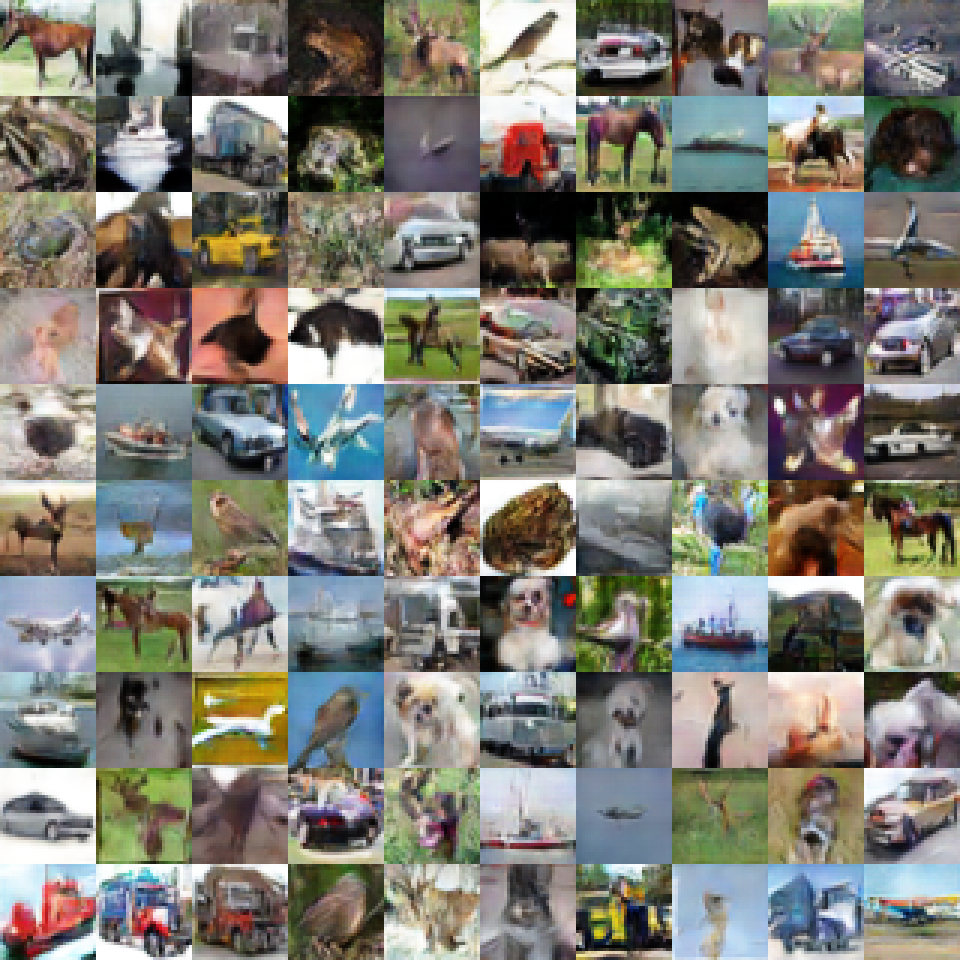
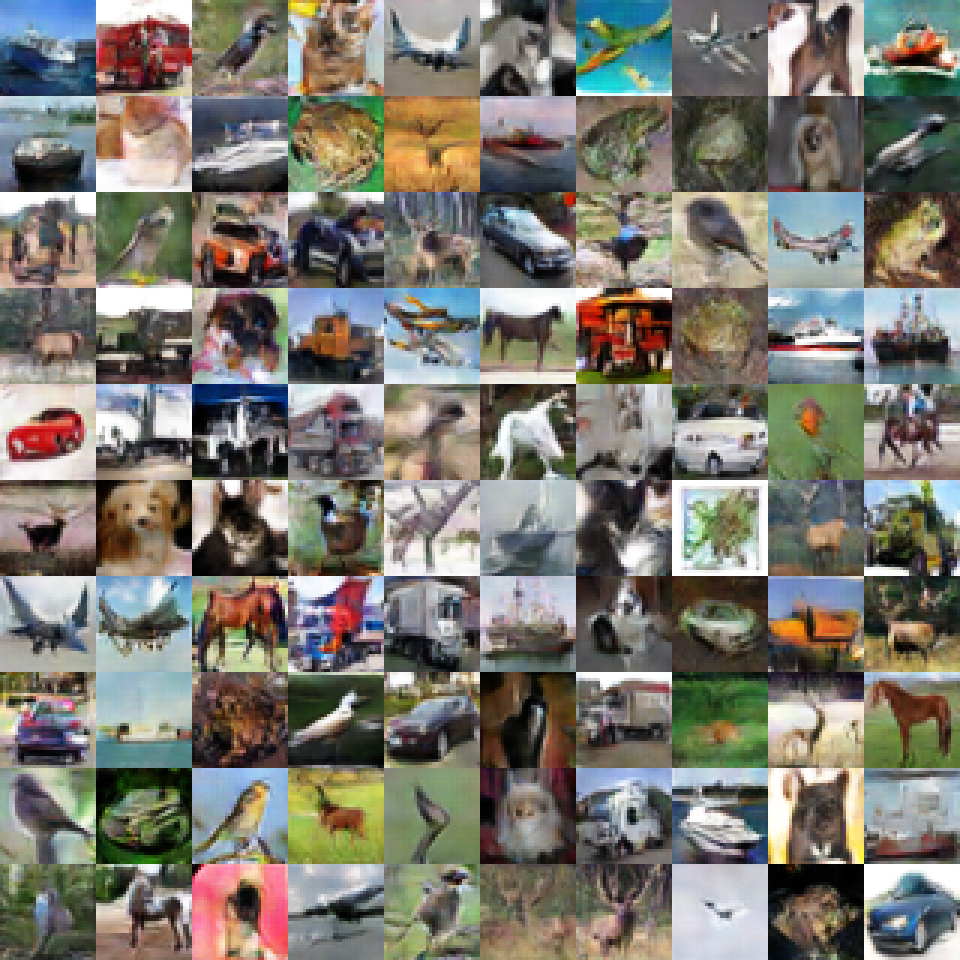
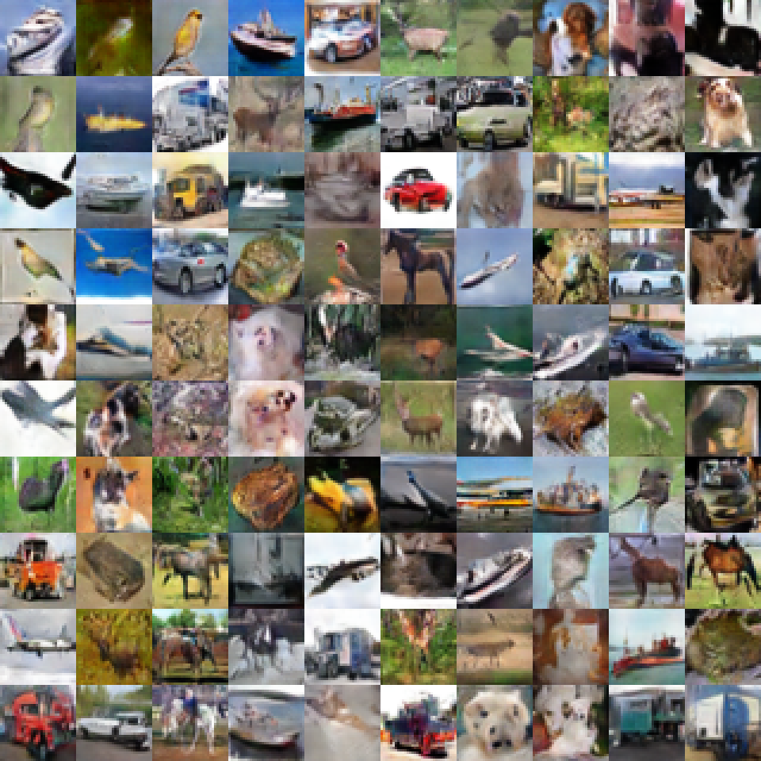

Please use Chrome to display video.
Code of 1D GAN is based on gan-intro
The two negative distributions are:
class NegDist(object):
def __init__(self):
self.mu = 13
self.sigma = 1
def sample(self, N):
samples = np.random.normal(self.mu, self.sigma, N)
samples.sort()
return samples
class NegDist2(object):
def __init__(self):
self.mu = -6
self.sigma = 2
def sample(self, N):
samples = np.random.normal(self.mu, self.sigma, N)
samples.sort()
return samples
Our supervised classification code on CIFAR 10 is based on pytorch-cifar.
We implement the criterion:
class NATLoss(nn.Module):
def __init__(self):
super(NeutralCE, self).__init__()
self.ce = nn.CrossEntropyLoss()
self.logsoftmax = nn.LogSoftmax(dim=1)
self.kl = nn.KLDivLoss(reduction='batchmean')
def forward(self, input, target, phase='test'):
if phase != 'train':
return self.ce(input, target)
pos_idx = target != -1
neg_idx = target == -1
ce_loss = self.ce(input[pos_idx], target[pos_idx])
neg_loss = self.kl(self.logsoftmax(input[neg_idx]), torch.tensor([[0.1] * 10]).repeat(input[neg_idx].shape[0], 1).to(device))
return ce_loss * sum(pos_idx) / input.shape[0] + neg_loss * sum(neg_idx) / input.shape[0]
Note, if you use BCE loss in pytorch, the network performance on negative samples is slightly weaker compared with our results in paper.
The ILSVRC2012 samples used in paper are:
n01514668, n01440764, n01484850, n01494475, n01496331, n01443537, n01491361, n01498041, n01675722,
n01629819, n01630670, n01632458, n01631663, n01632777, n01689811, n01693334, n01675722, n01694178,
n01692333, n01694178, n01695060, n01688243, n01693334, n01689811, n01728572, n01751748, n01755581,
n01749939, n01753488, n01756291, n01773797, n01774384, n01775062, n01774750, n01776313, n01774384
For NAT-GAN on CIFAR 10, code will be available soon, and you can easily implement it by modifying
AM GAN, some important codes are:
fake_logits = discriminator(fake_datas, num_logits)
fake_logits2 = discriminator(tf.concat([fake_datas, next(neg_gen)[0]], 0), num_logits)
dis_fake_loss = kl_divergence(tf.ones_like(fake_logits, tf.float32) / num_logits, tf.nn.softmax(fake_logits))
dis_fake_loss2 = kl_divergence(tf.ones_like(fake_logits2, tf.float32) / num_logits, tf.nn.softmax(fake_logits2))
set class number=10, batchsize=256, and you'd better add negative samples every 10 batches to allow model converge better.
There are some generated samples:
NAT-GAN: 
NAT-GAN_1: 
NAT-GAN_3: 
NAT-GAN_10: 
CatGAN: 
CatGAN_1: 
CatGAN_3: 
CatGAN_10: 
AM GAN: 